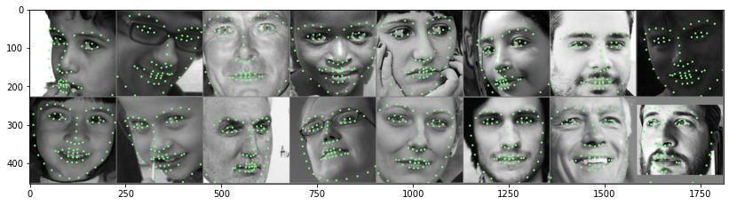
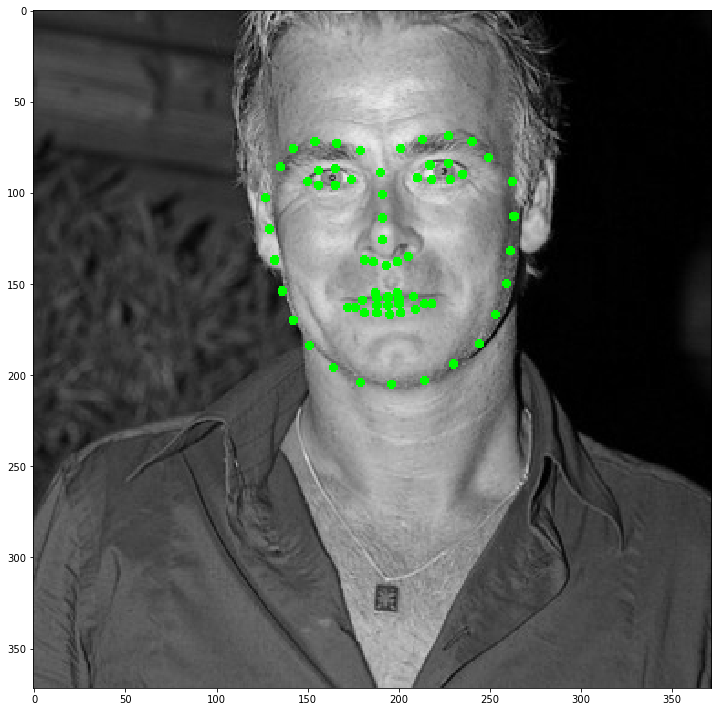
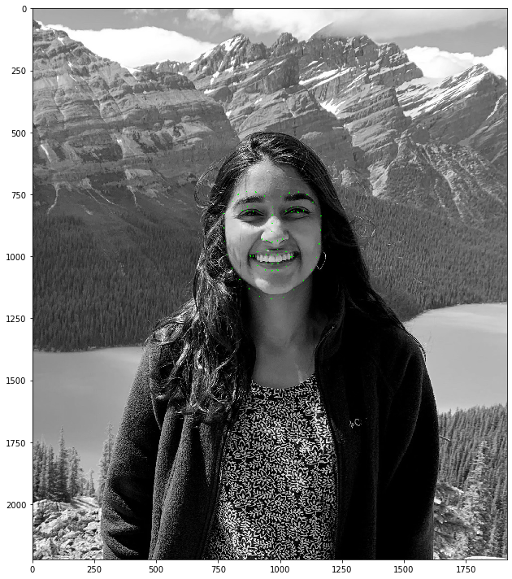

Overview
The purpose of this project is to accurately detect facial keypoints on images using a neural network.
Part 1: Nose Tip Detection
In this part, the goal was to just predict the location of the person's nose (by finding a nose "keypoint"). Here's a few images used in the training dataloader, with the ground truth nose keypoints overlayed on top of them:
After creating the dataloader, I was able to run my model on the testing dataset! For this process, I tried a few different hyperparameter combinations, and here are the results from each:
[NOTE: in the images below, the green dots are the predictions from my CNN, and the red points are the ground truth points from the dataloader / dataset. The name of each "run" corresponds to the file I stored the information in]
checkpoint0_1.pt:
- num layers: 3
- channels size: (layer 1) 1->12, (layer 2) 12->32, (layer 3) 32->64
- filter size: (3,3) for all
- learning rate: 0.001
- epochs: 25
|
|
checkpoint0_2.pt: For this run, I changed the learning rate to be 0.01
- num layers: 3
- channels size: (layer 1) 1->12, (layer 2) 12->32, (layer 3) 32->64
- filter size: (3,3) for all
- learning rate: 0.01
- epochs: 25
Visually, this run performed worse on 15/16 images in the sample pictured below (where "worse" means its L2 distance from the ground truth point is larger than in checkpoint0_1.pt)
|
|
checkpoint0_3.pt: For this run, I changed the filter / kernel size from 3 to 7 for all layers
- num layers: 3
- channels size: (layer 1) 1->12, (layer 2) 12->32, (layer 3) 32->64
- filter size: (7,7) for all
- learning rate: 0.001
- epochs: 25
Visually, this run performed somewhat comparably to the first run -- some images had better nose keypoint predictions than the first, while others had worse predictions.
|
|
checkpoint0_4.pt: For this run, I added a fourth layer and made it have a 7,7 kernel
- num layers: 4
- channels size: (layer 1) 1->12, (layer 2) 12->32, (layer 3) 32->32, (layer 4) 32->64
- filter size: (7,7) for all
- learning rate: 0.001
- epochs: 25
This run performed better on the forward-facing images, but worse on the sideways people.

|
|
|
When examining if this model works, we can specifically draw our attention to these four images:


In the left two images have quite misaligned keypoints, while the right two images are well-aligned.
There are a few potential reason why this may have not worked out well:
- Lighting in the images (one side of the face is well-lit / doesn't have shadows, while others are more uniform)
- Hairstyle
- Direction / rotation of the face
In these two examples, the common thread primarily seems to be facial rotation. This is apparent because the middle two images are the same person (so all the same features), but in one image his head is rotated and in the other it's not.
Part 2: Full Facial Keypoints Detection
In this part, we are detecting full facial keypoints. I used an input image size of 160x120 for my dataloader. Within the loader, I performed many types of image augmentation / transformations -- I randomly changed every training image's brightness, saturation, rotation, and shifting in its image box, and this augmentation was randomly applied every time an image was retrieved from the data loader. I only had a test and training set for this one, with the train set containing images 1-32 and the test set consisting of images 33-40 in the given dataset.
The CNN has, in total 5 layers, with channel sizes of 12, 18, 24, 32, and, 64 respectively. The first and last layer also have kernel sizes of 7x7, while all of the other layers have sizes of 3x3.
Here's some more information about the network / hyperparameters:
Net(
(conv1): Conv2d(1, 12, kernel_size=(7, 7), stride=(1, 1), padding=(3, 3))
(conv2): Conv2d(12, 18, kernel_size=(3, 3), stride=(1, 1), padding=(1, 1))
(conv3): Conv2d(18, 24, kernel_size=(3, 3), stride=(1, 1), padding=(1, 1))
(conv4): Conv2d(24, 32, kernel_size=(3, 3), stride=(1, 1), padding=(1, 1))
(conv5): Conv2d(32, 64, kernel_size=(7, 7), stride=(1, 1), padding=(3, 3))
(fc1): Linear(in_features=960, out_features=1920, bias=True)
(fc2): Linear(in_features=1920, out_features=116, bias=True)
)
Images after being augmented in the dataloader:
Transformed image with transformed keypoint labels, from dataloader:
Plot of original points, given in the training loader, on augmented training set images:
Predicted keypoints on test images (green) compared to ground truth (red):
Plot of validation and MSE training loss:

Learned filter for first layer, net.conv1:
The filter is supposed to correspond to the various "weights" of key features in the set for determining these keypoints. As we can see, even with a few changes to the hyperparameters (sepcifically, the kernel sizes), this filter output and order can change significantly!
The top two images have quite misaligned keypoints, while the bottom two images are well-aligned.
There are a few potential reason why this may have not worked out well:
- Lighting in the images (one side of the face is well-lit / doesn't have shadows, while others are more uniform)
- Hairstyle
- Direction / rotation of the face
Just as in part 1, in these two examples, the common thread primarily seems to be facial rotation. This is apparent because the middle two images are the same person (so all the same features), but in one image his head is rotated and in the other it's not. One interesting thing to note is that the offset of keypoints in the rotated faces are offset more close to the center of the image (the mean). This makes me think that it is likely the combination of the facial rotation and the data augmentation that makes it tough to properly find the correct keypoints!
Part 3: Train With Larger Dataset
This new, larger dataset has 6666 images, documented in the xml file alongside each image’s facial keypoints and bounding box values. Every face has 68 facial keypoints. The bounding box is used here to crop the image such that they are not only the same size, but reduce much of the facial location variability when training. This means we are essentially abstracting away the variability in in the model being able to figure out what face we’re focusing on or if there is even a face in the scene, and simply allows us to train for key point placement. Our first step when loading the data is to split it into our training and validation sets — I used a 2/3: 1/3 ratio, where the training set had 2/3 of the images, and the validation set used 1/3 of the images. Upon gathering the images from a given dataset, we first cropped the image such that it is only the part defined by the bounding box, and then resize this to be a 244x244 image. Finally, if it is the testing set, we apply the randomized data augmentation as in part 2, and are able to feed it directly into our Resnet model!
Although I used Resnet18 for this section, it was still necessary to change some of the parameters to fit the dataset's needs. The first change was to make the input channel of the first convolutional layer to be 1, because the inputs we use are graysale images (rather than color). Further, for the last layer, the number of output channels needed to be 136, because we are seeking 68 keypoints (each of which contains an x and y value, and 68 * 2 = 136)
As for the rest of the hyperparameters, I left them as was defined by resnet18. The detailed information about them is included in the model below:
ResNet(
(conv1): Conv2d(1, 64, kernel_size=(7, 7), stride=(2, 2), padding=(3, 3), bias=False)
(bn1): BatchNorm2d(64, eps=1e-05, momentum=0.1, affine=True, track_running_stats=True)
(relu): ReLU(inplace=True)
(maxpool): MaxPool2d(kernel_size=3, stride=2, padding=1, dilation=1, ceil_mode=False)
(layer1): Sequential(
(0): BasicBlock(
(conv1): Conv2d(64, 64, kernel_size=(3, 3), stride=(1, 1), padding=(1, 1), bias=False)
(bn1): BatchNorm2d(64, eps=1e-05, momentum=0.1, affine=True, track_running_stats=True)
(relu): ReLU(inplace=True)
(conv2): Conv2d(64, 64, kernel_size=(3, 3), stride=(1, 1), padding=(1, 1), bias=False)
(bn2): BatchNorm2d(64, eps=1e-05, momentum=0.1, affine=True, track_running_stats=True)
)
(1): BasicBlock(
(conv1): Conv2d(64, 64, kernel_size=(3, 3), stride=(1, 1), padding=(1, 1), bias=False)
(bn1): BatchNorm2d(64, eps=1e-05, momentum=0.1, affine=True, track_running_stats=True)
(relu): ReLU(inplace=True)
(conv2): Conv2d(64, 64, kernel_size=(3, 3), stride=(1, 1), padding=(1, 1), bias=False)
(bn2): BatchNorm2d(64, eps=1e-05, momentum=0.1, affine=True, track_running_stats=True)
)
)
(layer2): Sequential(
(0): BasicBlock(
(conv1): Conv2d(64, 128, kernel_size=(3, 3), stride=(2, 2), padding=(1, 1), bias=False)
(bn1): BatchNorm2d(128, eps=1e-05, momentum=0.1, affine=True, track_running_stats=True)
(relu): ReLU(inplace=True)
(conv2): Conv2d(128, 128, kernel_size=(3, 3), stride=(1, 1), padding=(1, 1), bias=False)
(bn2): BatchNorm2d(128, eps=1e-05, momentum=0.1, affine=True, track_running_stats=True)
(downsample): Sequential(
(0): Conv2d(64, 128, kernel_size=(1, 1), stride=(2, 2), bias=False)
(1): BatchNorm2d(128, eps=1e-05, momentum=0.1, affine=True, track_running_stats=True)
)
)
(1): BasicBlock(
(conv1): Conv2d(128, 128, kernel_size=(3, 3), stride=(1, 1), padding=(1, 1), bias=False)
(bn1): BatchNorm2d(128, eps=1e-05, momentum=0.1, affine=True, track_running_stats=True)
(relu): ReLU(inplace=True)
(conv2): Conv2d(128, 128, kernel_size=(3, 3), stride=(1, 1), padding=(1, 1), bias=False)
(bn2): BatchNorm2d(128, eps=1e-05, momentum=0.1, affine=True, track_running_stats=True)
)
)
(layer3): Sequential(
(0): BasicBlock(
(conv1): Conv2d(128, 256, kernel_size=(3, 3), stride=(2, 2), padding=(1, 1), bias=False)
(bn1): BatchNorm2d(256, eps=1e-05, momentum=0.1, affine=True, track_running_stats=True)
(relu): ReLU(inplace=True)
(conv2): Conv2d(256, 256, kernel_size=(3, 3), stride=(1, 1), padding=(1, 1), bias=False)
(bn2): BatchNorm2d(256, eps=1e-05, momentum=0.1, affine=True, track_running_stats=True)
(downsample): Sequential(
(0): Conv2d(128, 256, kernel_size=(1, 1), stride=(2, 2), bias=False)
(1): BatchNorm2d(256, eps=1e-05, momentum=0.1, affine=True, track_running_stats=True)
)
)
(1): BasicBlock(
(conv1): Conv2d(256, 256, kernel_size=(3, 3), stride=(1, 1), padding=(1, 1), bias=False)
(bn1): BatchNorm2d(256, eps=1e-05, momentum=0.1, affine=True, track_running_stats=True)
(relu): ReLU(inplace=True)
(conv2): Conv2d(256, 256, kernel_size=(3, 3), stride=(1, 1), padding=(1, 1), bias=False)
(bn2): BatchNorm2d(256, eps=1e-05, momentum=0.1, affine=True, track_running_stats=True)
)
)
(layer4): Sequential(
(0): BasicBlock(
(conv1): Conv2d(256, 512, kernel_size=(3, 3), stride=(2, 2), padding=(1, 1), bias=False)
(bn1): BatchNorm2d(512, eps=1e-05, momentum=0.1, affine=True, track_running_stats=True)
(relu): ReLU(inplace=True)
(conv2): Conv2d(512, 512, kernel_size=(3, 3), stride=(1, 1), padding=(1, 1), bias=False)
(bn2): BatchNorm2d(512, eps=1e-05, momentum=0.1, affine=True, track_running_stats=True)
(downsample): Sequential(
(0): Conv2d(256, 512, kernel_size=(1, 1), stride=(2, 2), bias=False)
(1): BatchNorm2d(512, eps=1e-05, momentum=0.1, affine=True, track_running_stats=True)
)
)
(1): BasicBlock(
(conv1): Conv2d(512, 512, kernel_size=(3, 3), stride=(1, 1), padding=(1, 1), bias=False)
(bn1): BatchNorm2d(512, eps=1e-05, momentum=0.1, affine=True, track_running_stats=True)
(relu): ReLU(inplace=True)
(conv2): Conv2d(512, 512, kernel_size=(3, 3), stride=(1, 1), padding=(1, 1), bias=False)
(bn2): BatchNorm2d(512, eps=1e-05, momentum=0.1, affine=True, track_running_stats=True)
)
)
(avgpool): AdaptiveAvgPool2d(output_size=(1, 1))
(fc): Linear(in_features=512, out_features=136, bias=True)
)
For this part, I used the Resnet18 model to train on a larger dataset.
I tried out a couple of different runs / batch sizes (named by the .pt file the model information is stored in):
checkpoint2_3: batch size = 32
checkpoint2_5: batch size = 16
checkpoint2_6: batch size = 32, pretrained
checkpoint2_7: batch size = 16, pretrained
checkpoint2_8: batch size = 24, pretrained
I ended up using checkpoint 2_6 to visualize my final results, which was the pretrained model with a batch size of 32. It ended up being the most promising after ~10 epochs, so I didn't explore the others. However, one thing I've learned with these types of models is that you'll never truly know what works best until you try it!
With this model, my current ranking on Kaggle is 31, with a Mean Average Error of 9.12374
Training set, keypoints defined by dataset:
Plot of MSE training and validation loss for checkpoint2_5 model
Test set, predicted keypoints plotted are defined by my model on cropped 224px x 224px images:
Here are a few of the images from the test set that are transformed back into their normal size, with the keypoints scaled up accordingly:
|  |
Here's an up-close output of image 500:

As we can see, the model predicts the key points pretty accurately!
Here are some sample images from my collection / outside of the dataset that I'm going to test my model on!:

|

|
|
|

|
Keypoints detected on the faces that have been scaled and cropped to their bounding boxes:
Rescaled photo of keypoints:
|  |
My model does a pretty good job of detecting these keypoints. I would say, specifically for my and Zendaya's faces, it worked very well. For both Zuckerberg and Shrek, the fine feature detection (eyes, nose, mouth, eyebrows) seemed to also work fairly well, but the detection of larger facial features (chin, facial shape) did not work quite as well. This may be because their facial features are more exaggerated from the average training face (Mark's face is a bit thinner, while Shrek's face is a bit wider and proportioned in the style of an animated character.